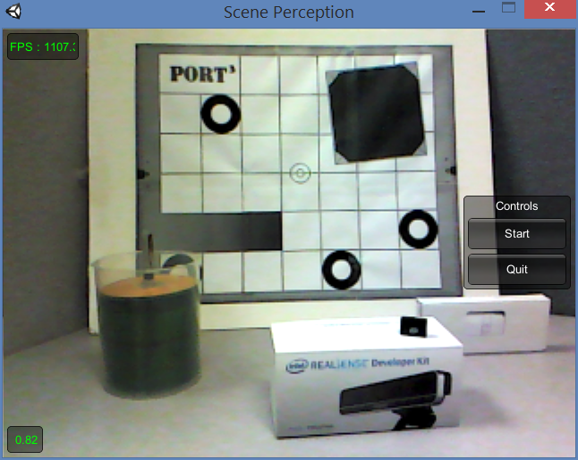
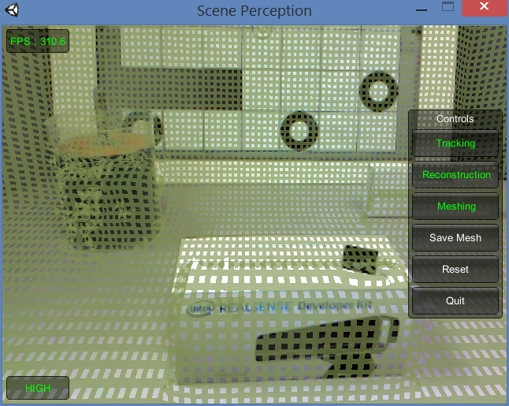

This sample RF_ScenePerception shows how to run the SDK scene perception module with the Unity game engine supporting the PC Standalone platform. The sample requires Unity v4.1.0 PRO (for the plugin capability) or later.
Copy the sample source to a writable folder and double click Assets/Scenes/RF_ScenePerception.unity to launch the Unity editor, and then run the game. The screen shot is similar to Figure 165.
The sample starts by displaying the color images with the frame rate at the top left and the scene quality at the bottom left. When the scene quality reaches certain threshold, the Start button appears on the control panel at the right. You can click the Start button to start scene perception or the Quit button to exit the sample.

Figure 165: The Scene Perception Sample Window
The scene perception window is similar to Figure 166. The top left shows the rendering frame rate; the bottom left shows the tracking accuracy; and the right panels show available controls. You can enable/disable tracking, reconstruction and meshing by clicking the corresponding buttons. When meshing is enabled, you see the meshes in green on top of the color image display.
Click the Save Mesh button to save the meshes, and the Reset button to start over.

Figure 166: The Meshed Scene
The sample consists of a set of scripts, a meshing prefab and a set of rendering shaders as follows:
| • | The script SenseInput.cs uses the SDK SenseManager to initialize the camera, start streaming, and some setup/shutdown steps. |
| • | The script Options.cs implements the menu selection as well as the initial scene quality checking screen. |
| • | The script DepthFusion.cs implements the scene perception functions, calling member functions of the SDK PXCMScenePerception interface. When there are meshes to be displayed, the script pushes the meshes into a rendering queue and uses the meshPrefab prefab to visualize the meshes. |
 The meshing process takes a long time thus it must be done on a thread, while the mesh game object must be created in the Unity main thread. To avoid dropping frames, the Unity main thread updates about 200 mesh game objects every frame.
The meshing process takes a long time thus it must be done on a thread, while the mesh game object must be created in the Unity main thread. To avoid dropping frames, the Unity main thread updates about 200 mesh game objects every frame.
| • | The script WorldFacingCamera.cs updates the camera pose information that the scene perception module tracks. |
 If you see a warning message "NullReferenceException: Object reference not set to an instance of an object UnityEditor.DockArea.OnGUI()" while running your application in Unity Editor, close the Game and Scene windows and redo the window layout. The warning message should go away after the layout change. See also http://neareal.net/index.php?ComputerGraphics%2FUnity%2FTips%2FError%20UnityEditor.DockArea.OnGui() (In Japanese.)
If you see a warning message "NullReferenceException: Object reference not set to an instance of an object UnityEditor.DockArea.OnGUI()" while running your application in Unity Editor, close the Game and Scene windows and redo the window layout. The warning message should go away after the layout change. See also http://neareal.net/index.php?ComputerGraphics%2FUnity%2FTips%2FError%20UnityEditor.DockArea.OnGui() (In Japanese.)